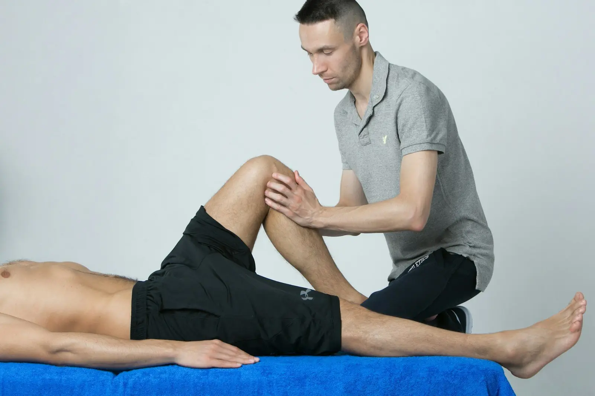

01
01Clínica médica
Consultas para diagnóstico, acompanhamento de doenças crônicas, check-ups, consulta popular e prevenção.
Saiba maisSua saúde, nossa prioridade
Experimente um atendimento de saúde personalizado que prioriza você. De exames de rotina a tratamentos especializados, nossa equipe está aqui para ajudar você a se sentir melhor.
JF3 Clínica Médica
Clínica médica, biomedicina estética, fisioterapia, nutrição, saúde mental e pediatria, integradas em um só lugar em Guapimirim.
Confiança e credibilidade
Sua saúde merece atenção, compreensão e conhecimento especializado. Reunimos esses elementos para criar uma experiência de saúde personalizada, pensada para atender às suas necessidades.
Saúde integral
Desde as necessidades de saúde do dia a dia até serviços especializados, descubra um atendimento atencioso, pensado para apoiar o seu bem-estar em todas as fases da vida.
Ver todos os tratamentos01Consultas para diagnóstico, acompanhamento de doenças crônicas, check-ups, consulta popular e prevenção.
Saiba mais 02
02Tratamentos estéticos personalizados, elaborados de acordo com seus objetivos, conforto e necessidades.
Saiba mais
03Reabilitação de lesões, dores musculares e articulares, pós-operatório e melhora da mobilidade.
Saiba mais 04
04Planejamento alimentar individualizado para saúde, bem-estar, controle de peso e performance.
Saiba maisCuidados na área da saúde mental, com acolhimento e orientação individualizada.
Saiba mais 06
06Atendimento médico delicado e atencioso para crianças, com foco no desenvolvimento saudável.
Saiba maisConheça-nos
Na JF3, acreditamos que a qualidade na assistência começa com a escuta. Nossa equipe combina conhecimento especializado com uma abordagem atenciosa e personalizada, para que cada paciente se sinta ouvido, compreendido e apoiado durante toda a sua jornada de saúde.
Saiba mais sobre nósDedicamos tempo para compreender suas preocupações e fazer com que cada visita seja uma experiência confortável e tranquilizadora.
Nossa equipe multidisciplinar trabalha em conjunto para oferecer um atendimento informado e atencioso às suas necessidades.
Cada paciente é diferente. Adaptamos as recomendações e os planos de tratamento aos seus objetivos de saúde.
O que nos guia
Nossos valores moldam cada interação, cada recomendação e cada etapa do cuidado que prestamos.
Abordamos cada paciente com empatia, respeito e atenção genuína.
Priorizamos decisões médicas ponderadas e padrões de atendimento responsáveis.
Seu conforto, privacidade e segurança continuam sendo fundamentais para a sua experiência.
Explicamos suas opções de forma clara para que você possa tomar decisões informadas sobre sua saúde.
Seus objetivos e preocupações com a saúde merecem um plano de cuidados que reflita suas necessidades.
Incentivamos cuidados preventivos e hábitos saudáveis que contribuem para o bem-estar a longo prazo.
Avaliações
Veja o que os pacientes dizem sobre a experiência de atendimento na JF3 Clínica Médica.
“Uma clínica muito organizada, ótimo atendimento. Médicos e profissionais qualificados. Em especial a psicopedagoga Michelle, que trata a minha filha há um tempo, e também as Dras. Maria Grossi e Maria Aparecida, que são simplesmente fantásticas.”
“Clínica excelente, atendimentos com profissionais sérios e qualificados em várias especialidades médicas. Ainda tem uma área para um cafezinho.”
“A melhor clínica de Guapimirim. Consultórios novos e modernos. Uma grande variedade de profissionais na área da saúde. Recomendo.”
Por que a JF3
Reunimos profissionais qualificados, comunicação clara e uma abordagem centrada no paciente para facilitar cada etapa da sua jornada de saúde.
Uma equipe colaborativa focada em entender suas necessidades e apoiar sua saúde.
Recomendações elaboradas com base em suas preocupações, preferências e circunstâncias individuais.
Utilização criteriosa de métodos e tecnologias contemporâneas, quando apropriado.
Um processo de agendamento prático, para facilitar o acesso aos cuidados de que você precisa.
Nossa equipe
Conheça os profissionais comprometidos em oferecer um atendimento atencioso, respeitoso e centrado no paciente.
Conheça a equipe completaFormação e especialidade a preencher.
Formação e especialidade a preencher.
Formação e especialidade a preencher.
Formação e especialidade a preencher.
Encontre-nos
Rua Eduardo Garcia, 325 - Centro
Guapimirim - RJ, 25946-220
Segunda a sexta: 08h às 18h
Sábado e domingo: fechado
Perguntas frequentes
Encontre respostas para perguntas frequentes sobre agendamentos, tratamentos e o que esperar durante sua visita.
Entre em contato com nossa equipeEnvie uma mensagem para o WhatsApp (21) 97110-0929, ligue para a clínica ou use o formulário da página de contato. Nossa equipe confirma data e horário com você.
Documento de identificação, carteirinha do plano de saúde, se tiver, e exames ou registros médicos anteriores que sejam relevantes.
Sim. Temos atendimento pediátrico, com foco no desenvolvimento saudável e na orientação para as famílias.
Segunda a sexta, das 08h às 18h. Sábado e domingo a clínica fica fechada.
Rua Eduardo Garcia, 325 - Centro, Guapimirim - RJ, 25946-220.
Sim. Peça a remarcação com antecedência pelo WhatsApp, e nossa equipe encontra um novo horário para você.
Seu bem-estar começa aqui
Quer esteja a agendar uma consulta de rotina ou a explorar opções de tratamento, nossa equipe está aqui para ajudar.